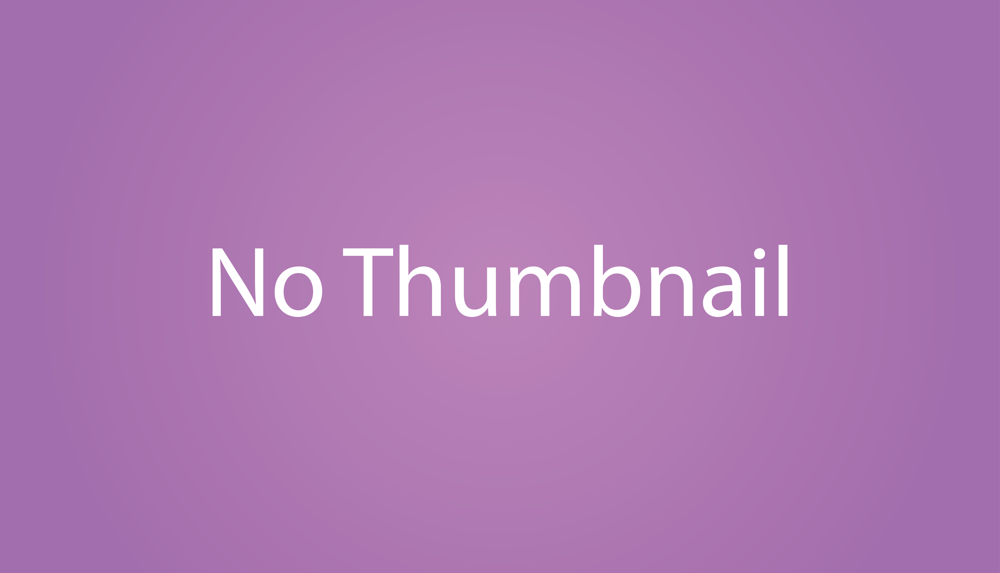

3 mois
5
C#
Deux programmeurs
Prisonnier d’Avaiki, la grotte originelle, affrontez les autres divinités
en créant des hybrides qui peupleront le nouveau monde.
[Insert Name] est un jeu de deck-building compétitif multijoueur,
dans lequel les joueurs constituent leur deck en achetant
et fusionnant des cartes, avant de s'affronter dans des combats au
tour par tour.
[Insert Name] est mon premier projet d'envergure que j'ai réalisé
en dehors du cadre de mes études. Cela a entrainer
de nombreux défis comme l'organisation
et le travail à distance.
[Insert Name] est également le premier projet sur lequel je n'
étais pas seul pour réaliser la programmation.
Ce projet m'a également permis de découvrir la gestion du
multijoueur, notamment à travers "NetCode for gameobjects"
ainsi que les services "Lobby" et "Relay".
Il est toutefois important de préciser que ce projet n'a pas pu être
mené à son terme en raison d'un manque de temps en fin de développement.
Lors de ce projet, j'ai pris le rôle de lead programmeur afin de coordonner
le découpage des tâches. Voici mes principales réalisations :
• Gestion d'une équipe réduite : Au lancement du projet, nous étions quatre
programmeurs motivés. La taille de l'équipe m'a conduit à mettre en
place plusieurs outils d'organisation, tels que des plannings et un système
de gestion de tâches.
Cependant, plusieurs membres se sont rapidement retirés du projet, laissant une équipe
bien plus réduite qu'initialement prévu. Cela m'a forcé à revoir une partie de
l'organisation ainsi que les priorités de développement, car nous n'étions plus
en mesure de réaliser l'ensemble des objectifs initiaux.
• Système de multijoueur : Je me suis occupé de l'intégration du multijoueur.
En raison de la nature compétitive du jeu, il était
nécessaire de mettre en place une architecture serveur authoritative plus sécurisée et
plus robuste face aux tentatives de triche. Toutefois, en raison des contraintes
mentionnées plus tôt,
certains aspects du multijoueur, comme le peer-to-peer et la création de lobbies
n'ont pu être qu'esquissés et n'ont pas été integré à la version finale.
• Gameplay programming : La structure des cartes ainsi
que le système de combat constituaient le cœur du gameplay.
L'objectif était de concevoir un système aussi modulaire que possible, afin de permettre
l'ajout et la modification rapide d'effets et de cartes.
Pour cela, nous avons opté pour une architecture reposant sur l'héritage
de classes, tant pour les effets que pour les cartes. En associant
chaque effet à des ID spécifiques, il devenait ensuite facile de les
appeler depuis n'importe où à l'aide d'une simple fonction.
• Tooling : En début de projet, le temps que le concept s'affine, j'ai
développé une console personnalisée permettant de faciliter le deboggage
directement dans les builds. Cette console permettait entre autres de récupérer
les logs, mais surtout d'appeler des fonctions internes aux scripts
via de simples commandes.
Elle s'est avérée être un énorme gain de temps, notamment lors de l'implémentation
du multijoueur.
Pour pallier au problème de désistement, nous avons tenté à plusieurs reprises d'intégrer
de nouveaux membres en cours de production. Cependant, cette intégration n'a pas été bien
maîtrisée et il était difficile de transmettre efficacement l'état actuel du projet,
afin que les nouveaux membres puissent se mettre à jour rapidement.
Bien que l'héritage de classes représentait un net progrès par rapport
à mes projets précédents, il aurait été profitable d'utiliser les interfaces pour rendre
le système encore plus modulaire et facilement adaptable.
La gestion du multijoueur fut par moments très compliquée. Il n'était pas rare que nous
rendions certains systèmes inutilement complexes, notamment en raison de notre
méconnaissance initiale de certains aspects.
Cependant, j'ai pu m'initier à la gestion du multijoueur tout en apprenant les
bases de la programmation en équipe.
<
>